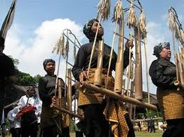
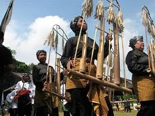

Budaya-Budayanya
Tari Jaipong
Tarian ini berasal dari Banten dan Jawa Barat yang menampilkan gerakan-gerakan enerjik dan ritmis dengan pengaruh musik tradisional Sunda.
Wayang Golek
Wayang Golek adalah seni pertunjukan tradisional Jawa Barat yang menggunakan boneka kayu yang dioperasikan oleh dalang untuk menceritakan cerita-cerita epik dan mitologi.
Kuda Lumping
Seni pertunjukan ini melibatkan penari yang menari di atas kuda-kudaan yang terbuat dari anyaman bambu atau bahan lainnya, yang diyakini dipengaruhi oleh kekuatan spiritual.
.jpeg) 
 Seni Ukir Kayu
Seni ukir kayu juga merupakan bagian penting dari seni rupa tradisional Banten, yang sering ditemukan di berbagai arsitektur tradisional dan hiasan rumah.
Seni Anyaman Bambu
Anyaman bambu merupakan salah satu kerajinan tangan tradisional Banten yang memperlihatkan keindahan dan keahlian dalam mengolah bahan alami menjadi karya seni yang indah.
Seni Batik
Meskipun batik lebih umum di daerah Jawa Tengah dan Jawa Timur, Banten juga memiliki tradisi batiknya sendiri yang khas, dengan motif-motif yang terinspirasi dari alam dan budaya lokal.